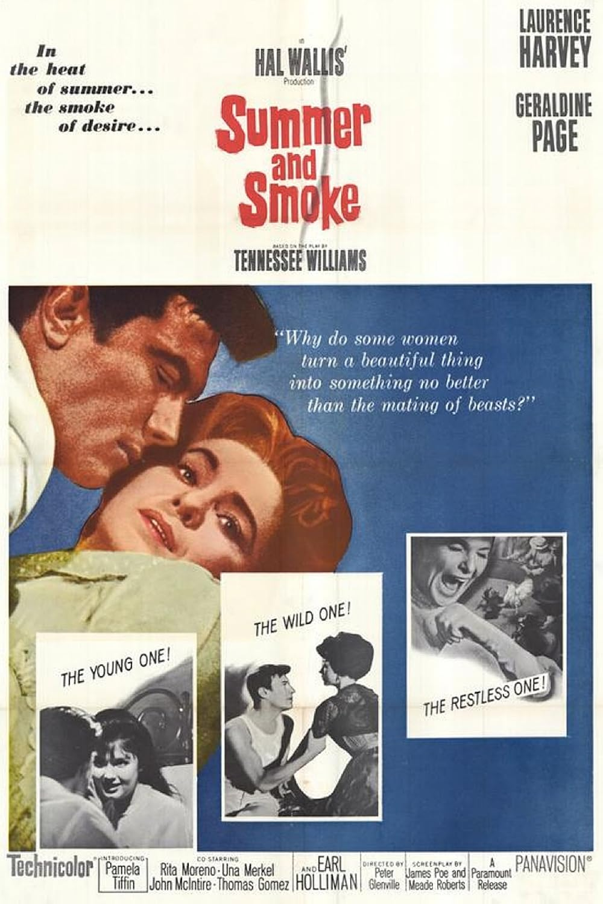

Summer and Smoke
34th Academy Awards
(Oscars 1962)
4 Nominations, 0 Awards
| Nominations | ||
|---|---|---|
| Category | Nominees | Result |
| Actress | Geraldine Page | Nominated |
| Actress in a Supporting Role | Una Merkel | Nominated |
| Art Direction (Color) | Arthur Krams, Hal Pereira, Sam Comer, and Walter Tyler | Nominated |
| Music (Music Score of a Dramatic or Comedy Picture) | Elmer Bernstein | Nominated |